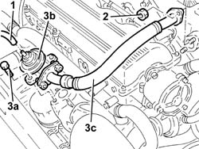

1080C54 pipe carrying exhaust gas from e.g.r. valve to inlet manifold - r + r
- Path
- Procedures > 10 ENGINE > 1080 EXHAUST EMISSION CONTROL SYSTEM > 1080C exhaust gas recirculation system (e.g.r.) > 1080C54 pipe carrying exhaust gas from e.g.r. valve to inlet manifold - r + r
- Kind
- repair procedure (removal / refitting; the operation number is the code)
- Applies to
- engines: 1.9 JTD 8v , 2.4 JTD 10v; all production periods
- Interactive page
- https://sloeber94.github.io/elrnDB-a156/en/#/3237842
Applies to: engines: 1.9 JTD 8v , 2.4 JTD 10v; all production periods
 Removing
Removing
 Refitting
Refitting1. Disconnect the vacuum intake pipe from the EGR valve.
2. Undo the nuts fixing the exhaust gas supply pipe from the E.G.R. valve to the inlet manifold.
3. Undo the bolts (3a) fixing the E.G.R. valve (3b) to the exhaust manifold, then remove it, complete with exhaust gas supply pipe to the inlet manifold (3c).

Applies to: engines: 1.9 JTD 8v , 2.4 JTD 10v; all production periods
Refitting
RemovingFit the E.G.R. valve, complete with exhaust gas supply pipe to the exhaust manifold and fix it to the exhaust manifold tightening the bolts to the recommended torque.
 | Fastening | Component | Ø | Value (daNm) |
|---|---|---|---|---|
- | Bolt | EGR VALVE | M8 | 2.1 - 2.6 |
Tighten the nuts fixing the exhaust gas supply pipe to the inlet manifold.
Connect the vacuum intake pipe to the E.G.R. valve.